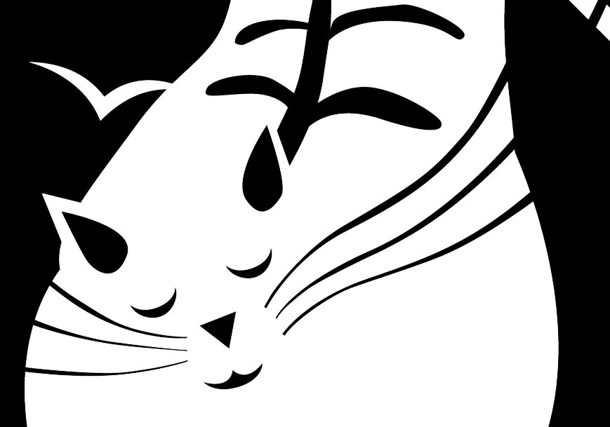

{ illustration }
Ghost 'n Found

A site-specific cooperative gaming experience set in the Staffarda Abbey (Cuneo). Through a custom-designed web app, players of all ages can scan various QR codes to summon the Abbey's ghosts and solve their riddles. Ghost 'n Found was commissioned by the Mauritian Order Foundation and supported by the Piedmont Region, as part of a project for the revaluation of the territory.
A project by We Are Müesli.
I was in charge of the illustration of the characters and of the UX/UI design of the web app.
Designed in 2022.